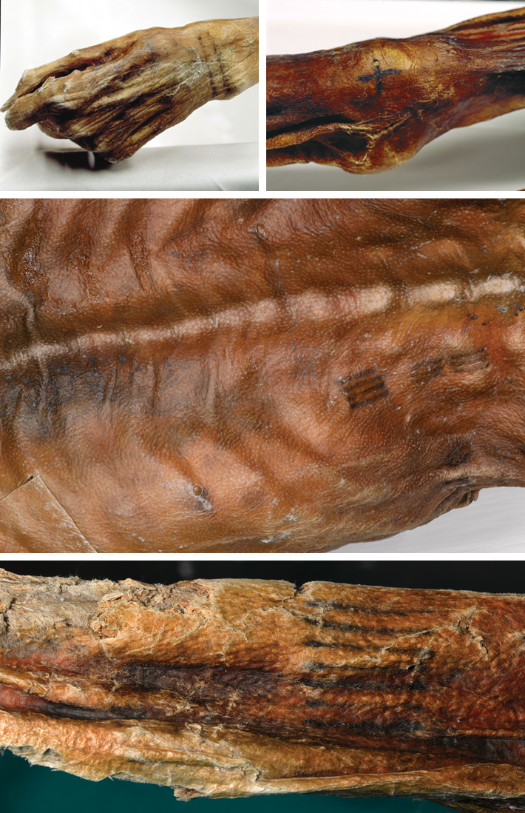
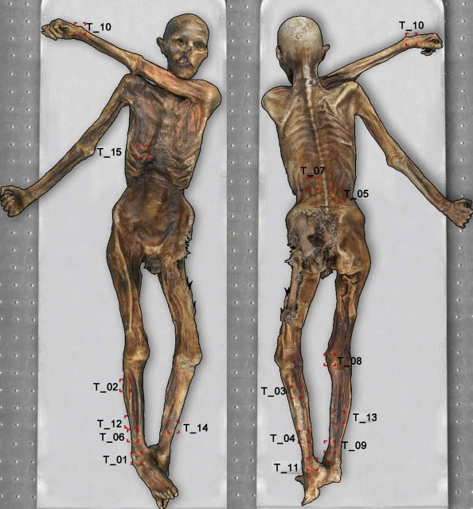
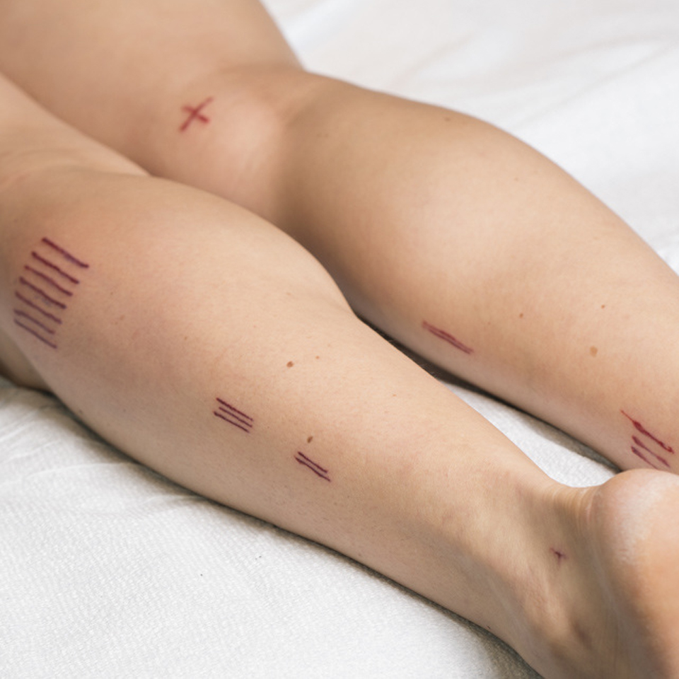
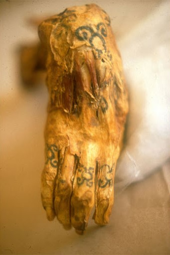

A tetovalas tortenete
A tetovalas
A tetoválás során az emberi vagy állati bőr pigmentálását változtatják meg a bőrrétegekbe vitt színezőanyagok segítségével a legkülönbözőbb célokkal, mint például a test díszítése, a törzsi hovatartozás jelzése, esetleg az azonosítás, mint például a kutyák fülébe tetovált szám esetén.
Otzi



A legrégebbi ismert emberi tetoválást Ötzi viselte, az 1990-es években az Alpokban talált férfimúmia,
korát kb. 5000 évesre becsülik. Bőre párhuzamos és keresztre emlékeztető rajzolatokkal volt díszítve.
Egyiptomi eredet
Egyiptomi agyagfigurákon látható pontsoros dísz az i. e. 4. évezredből. Thébai női múmián egyértelműen festéknyomokat találtak szintén az i. e. 4. évezredből. Hasonló korú mezopotámiai agyagszobrokon is tetoválás látható. A görög korban Hérodotosz feljegyzései szerint a trákoknál a tetoválás az előkelőség jele volt.

Az i. e. 6. századból származik Aetius orvos leírása a tetoválás technikájáról. Leírása alapján a tetoválásra kijelölt területet először fertőtlenítő hatású növények levével mosták le, majd a formát tűvel böködték a bőrbe "amíg a katonának vére nem folyt", végül alaposan bedörzsölték a tintát, amihez hagymalébe kevert egyiptomi fenyő kérgét, rozsdát, gubacsot és kénsavat használtak.